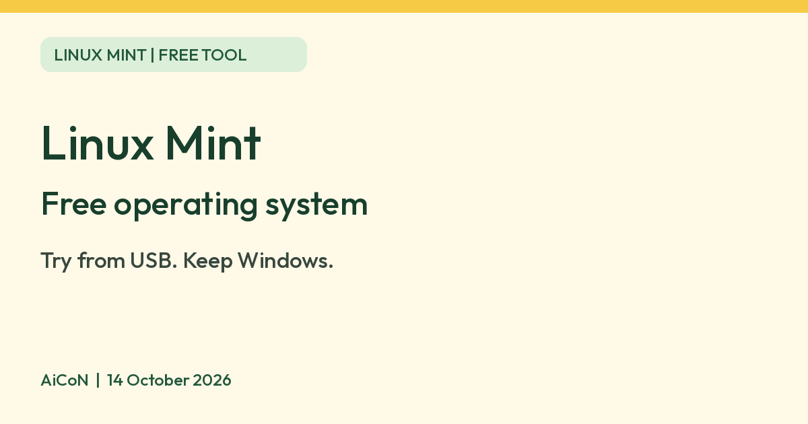

Linux Mint: a free operating system you can try from a USB stick
Linux Mint is a free alternative to Windows for desktops and laptops. Its website says you can try it from a USB stick without installing.

What it is
Linux Mint is an operating system for desktop and laptop computers, an alternative to Windows. Its website says it is "designed to work 'out of the box'" and comes with the apps most people need. It is based on Debian and Ubuntu. It is not an AI tool. We included it because it is a free tool from an official source.
Is it free?
Yes. The Linux Mint website answers "Is it free?" with "Yes, Linux Mint is completely free of charge". It says almost everything in it is open source, and that it is free "thanks to your donations and advertising". Donating is optional. The FAQ also says you can use it for commercial purposes.
What it comes with
These are Linux Mint's own claims from its homepage. We did not test them.
- Office: LibreOffice, with import and export of PDF and Microsoft Office documents.
- Graphics: Blender, GIMP and Inkscape.
- Web: Firefox.
- Multimedia: music, podcasts and online radio, TV and movies.
- Games: access to more than 7,800 games through Steam, plus other game launchers.
- More than 60,000 software packages are available to install.
Will it run on my computer?
- The FAQ lists the system requirements as 2GB RAM (4GB recommended), 20GB of disk space (100GB recommended) and a 1024x768 screen.
- The homepage says Linux Mint works on most computers.
- There are three editions. Cinnamon is the most popular and full-featured. MATE is more traditional and faster. Xfce is the most lightweight. The installation guide suggests Cinnamon if you are unsure, and says MATE uses fewer resources and can run faster on older computers.
- From version 20 onward only 64-bit is available. The guide says most computers made after 2007 have a 64-bit processor.
- The current release on the site is Linux Mint 22.3 "Zena". The release page says it is a long-term support release, supported until April 2029.
How to try it safely
- The homepage says you can run it from a live USB stick to check that everything works, without installing anything. The installation guide says changes in the live session are not permanent.
- The homepage says you can keep Windows and choose between the two when the computer starts. The guide says the installer can install Linux Mint alongside another system, and that it resizes your existing system to make room.
- The guide warns that choosing "Erase disk and install Linux Mint" is for when all data on the drive can be lost. Back up your files before you install.
- The guide says to verify the ISO file you download, using the SHA256 sums and signature that Linux Mint provides. Download it only from linuxmint.com or its listed mirrors.
Privacy and data
- The homepage says "We don't collect data, we don't work against you".
- The privacy policy says the project aims to gather as little personal data as possible. It says some services need an account, which asks for a nickname and email address. The forums are an example of a service with accounts. Its websites record normal server information such as network details from your browser.
- We did not check what network connections the installed system makes.
What to know first
- Windows programs do not run on Linux Mint as they are. We found no list on the official pages of which Windows programs have a Linux Mint equivalent, so check the apps you depend on before you switch.
- The installation guide says that if your hardware is too recent to be detected, there is an alternative ISO (an Edge ISO) in the user guide.
- The guide says full-disk encryption has issues with some NVIDIA drivers. If you are new to Linux, it suggests home directory encryption instead.
Phones
- Linux Mint is for desktop and laptop computers. We found no phone version.
India
- We found no India-specific restriction on the pages we read.
Frequently asked questions
Is Linux Mint free?
Yes. The site says it is completely free of charge. Donations are optional.
Can I keep Windows?
The site says yes. You can have both and pick one at start-up.
Is it AI?
No. It is an operating system. We included it because it is a free tool from an official source.
Sources: Linux Mint, Download, FAQ, Privacy, Release 22.3, Installation guide. Checked 14 October 2026.
Logo: the Linux Mint icon from linuxmint.com. Its FAQ says you can use the Linux Mint logo in articles and websites as long as you do not pretend to be Linux Mint or suggest you are affiliated. Independent guide, not affiliated.